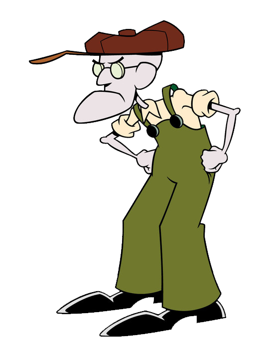
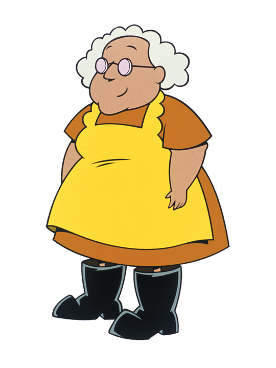

-
Coragem
HP: 300

Descrição:
Coragem é o protagonista principal e o personagem titular da série Coragem, o Cão Covarde. Ele é um cachorro rosa que foi encontrado por Muriel Bagge depois que ele escapou da clínica veterinária Bichinhos do Amanhã na cidade de Lugar Nenhum.
-
Eustácio Bagge
HP: 200
Descrição:
Eustácio Bagge é um velho fazendeiro resmungão. Ele mora em Lugar Nenhum na sua fazenda com sua esposa Muriel Bagge e seu cachorro Coragem.
-
Muriel Bagge
HP: 100
Descrição
Muriel Bagge é a deuteragonista da série Coragem, o Cão Covarde. Ela também é uma mulher idosa escocesa com excesso de peso. Ela é a gentil dona de Coragem e a esposa trabalhadora de Eustácio Bagge.